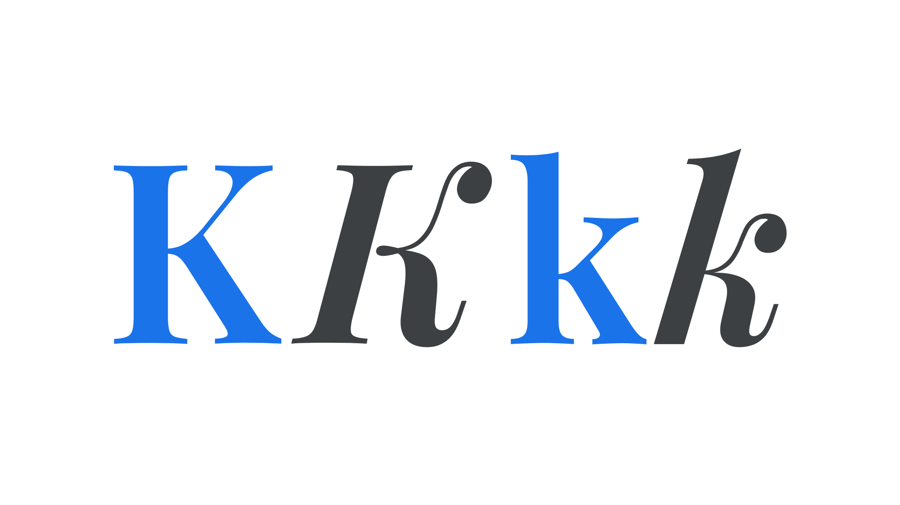

Regular, or upright
By Google Fonts Knowledge contributors · Google Fonts Knowledge.
Original article · Source on GitHub · CC BY-SA 4.0. Text, illustrations and existing credits reproduced from the licensed Knowledge repository. Open Shelf adapted the layout and links; these adaptations are also CC BY-SA 4.0. No endorsement implied.
“Regular” can refer to the regular weight, usually assigned the font-weight value of 400 in CSS, or the regular/upright/roman (i.e., non-italic or oblique) style of a typeface.

When referring to this style it’s usually best to add clarity, by avoiding “regular” as a label on its own.
When the typeface is changing between a roman and italic (or upright and cursive, or oblique), say “regular roman”, “regular italic” or “regular upright”.
Note that in CSS, the style is referred to as “normal”; i.e., font-style: normal;.
“Regular” might also casually refer to type’s width when there are condensed or wide variants available, although this is less often named explicitly, and then more often is called “normal” as in “regular normal roman” or “bold condensed italic”.